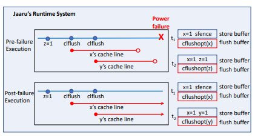
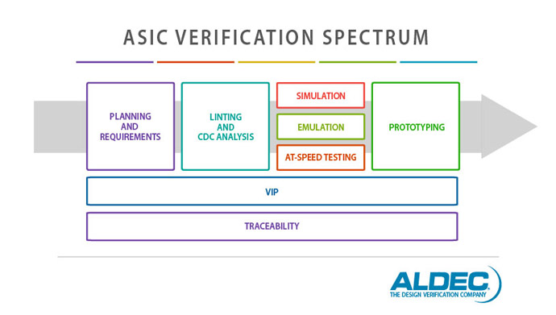

I'm Alex. I completed my undergraduate in computer science and engineering at UC Irvine, and am currently a phd student at UC Santa Cruz working with the VAMA (Vertical Architecture, Memory, and Algorithms) lab. I am broadly interested in hardware design, although my past experience has covered archetecture and othe related areas. I enjoy running and biking, as well listening to podcasts in my spare time. You can contact me at alee156@ucsc.edu
I had the pleasure to work on a non-volatile memory correctness checking tool with Hamed Gorjiara at UC Irvine. The tool was built on top of a previous project, Jaaru, which checked NVM software by essentially simulating non-persistant executions. A related publication was published in PLDI '22.
digram from Jaaru paper
While interning at Micron, I worked on using machine learning to predict the usefulness of generated stimuli for RTL designs. The project comprised comparing RL, anomaly detection, and classification applied to the problem of predicting the usefulness of a RTL test case.
Leverage agile frameworks to provide a robust synopsis for high level overviews. Iterative approaches to corporate strategy foster collaborative thinking to further the overall value proposition. Organically grow the holistic world view of disruptive innovation.
created with
Website Builder Software .